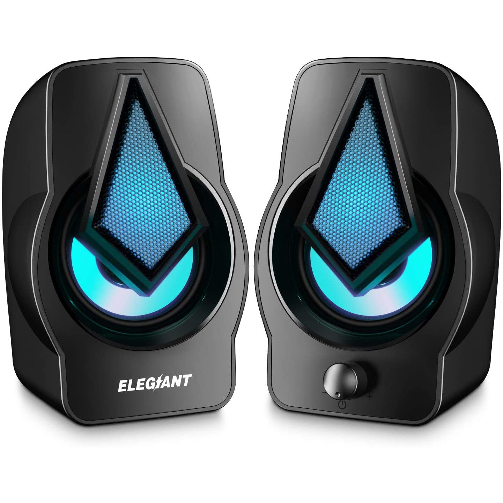
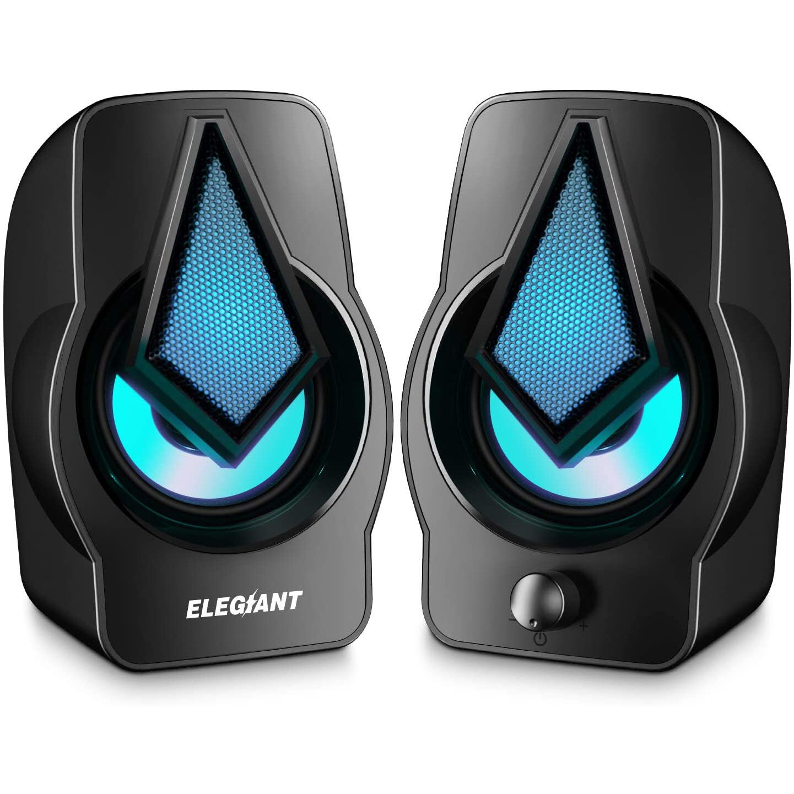

Componentele hardware ale unui PC reprezintă partea fizică a acestuia și ajută la intrarea, prelucrarea, transmiterea și ieșirea datelor din sistemul informatic. Practic lucrează alături de componenta software pentru a crea PC-ul așa cum îl știm. În următoarele minute vom vorbi despre placa de bază, modulele RAM, mediile de stocare, placa video, perifericele, dar si despre creierul calculatorului – procesorul.

Aceasta nu este neapărat o componentă hardware în sine, ci mai degrabă locul în care sunt legate între ele toate celelalte componente și uneori poate ține chiar locul altor componente precum placa video sau placa de rețea.


Procesorul este punctul prin care trece
informațiile și componenta hardware care decide ordinea în care
acestea sunt executate. De asemenea, trebuie menționat faptul că fără
un procesor, calculatorul nu poate funcționa.
Limbajul brut sub care procesorul primește
informații de la programele de tip software este sub formă de 1 și 0
care sunt traduse în ceea ce putem vedea la accesarea unui Hard Disk,
vizionarea unui ecran sau ascultarea unei melodii.
Practic, toată informația este la bază unu și
zero, dar se transformă în ceea ce vedem și auzim datorită
procesorului.
Viteza unui procesor se măsoară în MHz și
acesta poate avea unul sau mai multe nuclee, în funcție de performanța
de care este capabil.


Memoria RAM (memoria cu acces aleatoriu) stochează temporar informațiile folosite de celelalte componente ale calculatorului. Astfel că aceste informații sunt șterse de fiecare dată când PC-ul este închis. Memoria RAM este importantă deoarece fără ea, toate datele ar fi procesate mult mai greu de către calculator. Aceasta este cunoscută drept cea mai rapidă unitate de stocare care stochează datele procesate de CPU.


Acestea pot fi, atât interne, cât și externe. Așadar, atunci când spunem medii de stocare ne putem referi la SSD-uri, HDD-uri, unități USB etc. În general, caracteristicile importante ale acestora se referă la spațiul de stocare și viteza de transfer. Astfel că pentru sistemul de operare ideal este un SSD deoarece aceste medii de stocare oferă viteze superioare față de HDD și sunt mult mai rezistente la șocurile mecanice. Cu toate acestea, un SSD nu ar fi recomandat pentru stocarea fotografiilor sau videoclipurilor din cauza faptului că prețul pentru stocare este mult mai mare.

Placa video poate lipsi dintr-un sistem informatic deoarece poate fi înlocuită de o placă on-board pe placa de bază. Cu toate acestea, este o componentă importantă deoarece te ajută să obții performanțe grafice mult mai bune cu sistemul tău și poți juca jocuri de ultimă generație sau vizualiza clipuri în format 4k+. De asemenea, cu ajutorul puterii de procesare a plăcii video poți să folosești diferite programe pentru editare foto-video.


Componentele periferice de tip hardware sunt practic toate cele care pot fi conectate, într-un fel sau altul la sistemul informatic. Printre acestea amintim: căști, monitor, tastatură, mouse, boxe, imprimante, scanere etc. În funcție de tipul lor, perifericele pot fi de intrare (tastatura, mouseul, scanerele), de ieșire (monitorul, boxele, imprimantele) sau de intrare-ieșire (ecranele tactile).
 

Un component hardware care a pierdut mult teren în fața unităților noi de stocare este CD/DVDROM-ul. Acest device este folosit pentru a citi informațiile de pe CD-uri, dar în ultimul timp, popularitatea stick- urilor USB este în creștere, iar cea a CD-urilor și DVD-urilor în scădere.